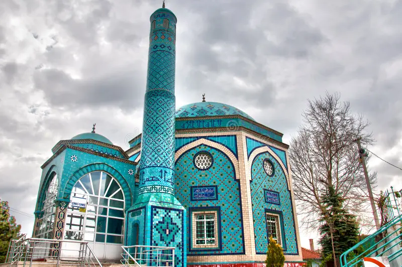

Kütahya Hakkında
Kütahya, tarihi ve kültürel zenginlikleriyle ünlü, Osmanlı İmparatorluğu'na başkentlik yapmış bir şehirdir. Ayrıca, çini ve seramikleriyle de tanınır. Kütahya, Osmanlı dönemi eserleri ve geleneksel el sanatlarıyla büyük bir kültürel mirasa sahiptir. Şehir, tarihi yapıları, doğal güzellikleri ve el işçiliği ürünleriyle önemli bir turistik destinasyon olma özelliğini taşır.
Kütahya'da Ziyaret Edilmesi Gereken Başlıca Yerler:
- Kütahya Kalesi: Şehri yüksek bir noktadan görebileceğiniz Kütahya Kalesi, hem tarihi hem de stratejik açıdan önemli bir yapıdır.
- Çini ve Seramik Müzesi: Kütahya'nın geleneksel çini sanatını ve seramik tarihini yansıtan önemli eserlerin bulunduğu bir müzedir.
- Domaniç Yaylası: Doğayla iç içe vakit geçirmek isteyenler için muazzam bir doğa harikasıdır.
- Hisar Camii: Osmanlı mimarisinin güzel örneklerinden biri olan tarihi bir camidir.
- Kütahya Arkeoloji Müzesi: Antik dönemlerden kalan eserlerin sergilendiği bir müzedir.